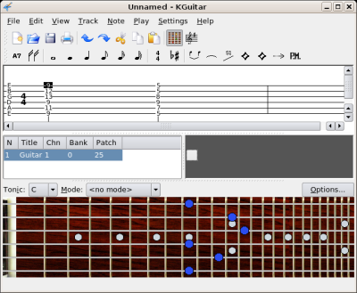
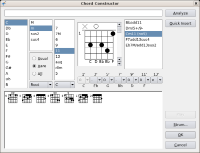
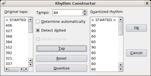
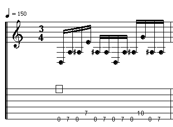

...making Linux just a little more fun!
It's been quite a while since my last "Songs in The Key of Tux" article, and, to be honest, I had given up on using Linux-based programs for my tablature needs.
The main problem is that, as a metal guitarist, I need to be able to represent palm muting in my tablature — I've tried in the past to give tablature to people that lacked palm muting information, and ended up having to show them how to play the riffs, which defeats the purpose of tablature.
Fortunately, I finally got around to trying out KGuitar, which does support palm muting.
As well as palm muting, KGuitar has a number of great features. It's able to import Guitar Pro files, up to version 4; it has a visual fretboard, so you can see how a chord would look on the guitar neck; a chord analyser (like Guitar Pro's) that gives you a choice of fingerings based on a chord name, or provides you with chord names for a chord you input; and, a feature that seems to be unique to KGuitar: the ability to tap the rhythm of a bar using the mouse or keyboard.
KGuitar's virtual fretboard
If you've ever used a Windows-based tablature editor, KGuitar will seem familiar to you. Most editing is done with the keyboard: use the arrow keys to go to the section of the tablature you want to edit, and type the number of the fret of the note you want to add.
The Chord Constructor is one of KGuitar's most interesting features. For those who are interested in music theory, it allows you to construct a chord by selecting the root note, and editing the type of the chord using the three lists on the top left of the window. It then gives a list of icons of possible fingerings on the bottom of the window.
To launch the Chord Constructor, either select Note->Insert->Chord, or type 'Shift-C':
For those of us who don't know music theory, it allows us to fake it: simply click on the relevant frets in the chord box in the middle of the window, and it will give you a list of possible chord names on the right. You can then use it to find alternate fingerings: you might just find an easier way to play your music!
The Rhythm Constructor is an interesting idea, and quite useful for the majority of guitarists, who don't read music: simply enter the notes for a bar (or several bars), select Note->Insert->Rhythm (or 'Shift-R'), and tap out the rhythm using the mouse: tap on the Tap button, then press Quantize when you're finished.
I tried it out using a simple sample file (MIDI). The result (MIDI) was different, but my mouse clicking is more to blame than KGuitar is. I'm sure that, with practise, it could be quite a useful tool.
TuxGuitar is a Java-based tablature program which can import Guitar Pro 5 files. Although it can't represent several features of Guitar Pro tablature, as it lacks those features, it does an admirable job of importing files. (Though I have encountered one bug: see below).
It also claims to be able to export files in Guitar Pro 3 and 4 formats, although my every attempt to import those files into KGuitar gave me screens full of this output:
kguitar: WARNING: readDelphiString - first word doesn't match second byte kguitar: WARNING: Chord INT1=-1, not 257 kguitar: WARNING: Chord INT2=-1, not 0 kguitar: WARNING: Chord INT4=-1, not 0 kguitar: WARNING: Chord BYTE5=255, not 0
I also encountered a strange bug when importing tablature of one of my exercises: (right-click on these links to download either the TuxGuitar's GP4 or the KGuitar version.)
To explain that for those who read neither tablature nor music, the tablature doesn't match the music notation. It should have looked something like this (using KGuitar's ASCII export, slightly corrected):
E|--------------------------|-------------------------| B|--------------------------|-------------------------| G|--------------------------|-------------------------| D|--------------------------|-------------------------| A|-------7-----------10-----|------7-----------10-----| D|-0-7-8---8-7-0-7-8----8-7-|0-7-8---8-7-0-7-8----8-7-|
You could be forgiven for thinking that this is a font problem; that a 0 with a line through it and an 8 look similar, but TuxGuitar's playback follows the tablature line, and plays D (0) instead of A sharp (8).
I'll take a closer look at TuxGuitar (and DGuitar, a Java-based Guitar Pro viewer) in a future article, when I've set up Java on my system. Until then, here are some sample files to try with TuxGuitar. Some of them are quite complicated, so they should give a good indication of what TuxGuitar can do.
Talkback: Discuss this article with The Answer Gang
Jimmy has been using computers from the tender age of seven, when his father
inherited an Amstrad PCW8256. After a few brief flirtations with an Atari ST
and numerous versions of DOS and Windows, Jimmy was introduced to Linux in 1998
and hasn't looked back.
In his spare time, Jimmy likes to play guitar and read: not at the same time,
but the picks make handy bookmarks.
 Jimmy is a single father of one, who enjoys long walks... Oh, right.
Jimmy is a single father of one, who enjoys long walks... Oh, right.